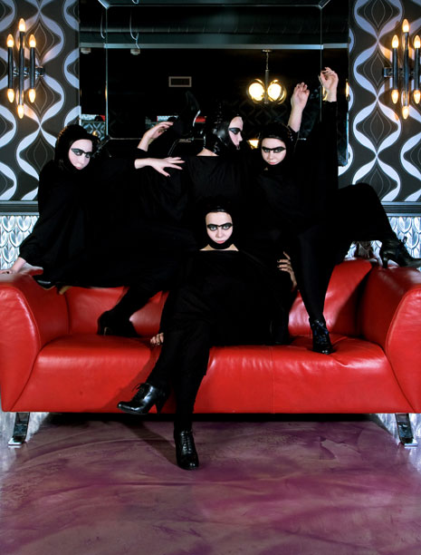

Episode 3: The Dark Side
The dark concept of Episode 3 was in celebration of the onset of the Icelandic winter, the shorter days and much longer nights. Photography for this was by acclaimed Icelandic photographer Óskar Hallgrímsson and the suits were custom made by one of the participating members Magga Sigga Valgarðsdóttir.
- Producer, Concept and Artistic Direction: Kitty Von-Sometime
- Photography: Official shoot by Oskar Hallgrímsson, behind the scenes by Ben Mathis
- Video: Shot by Brieve and Haffi - edited by Kitty Von-Sometime
- Costumes: Made by Magga Sigga Valgarðsdóttir
- Theme Music: Spellbound - Siouxsie and the Banshees
- 27th October 2007
